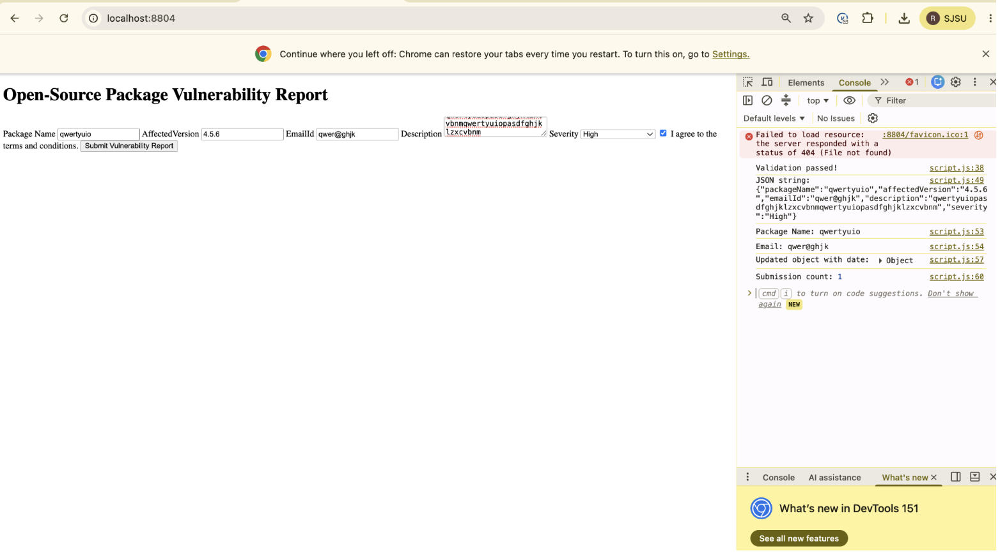
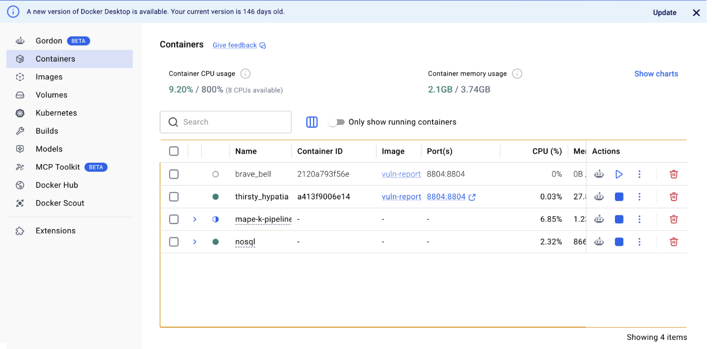
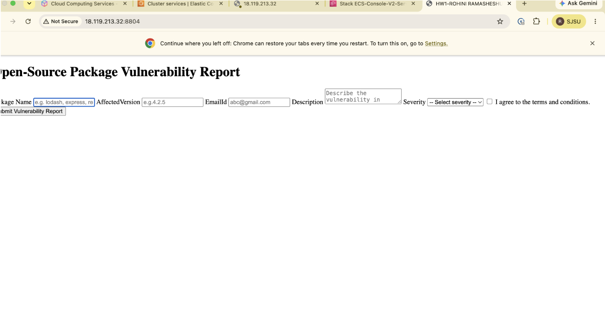
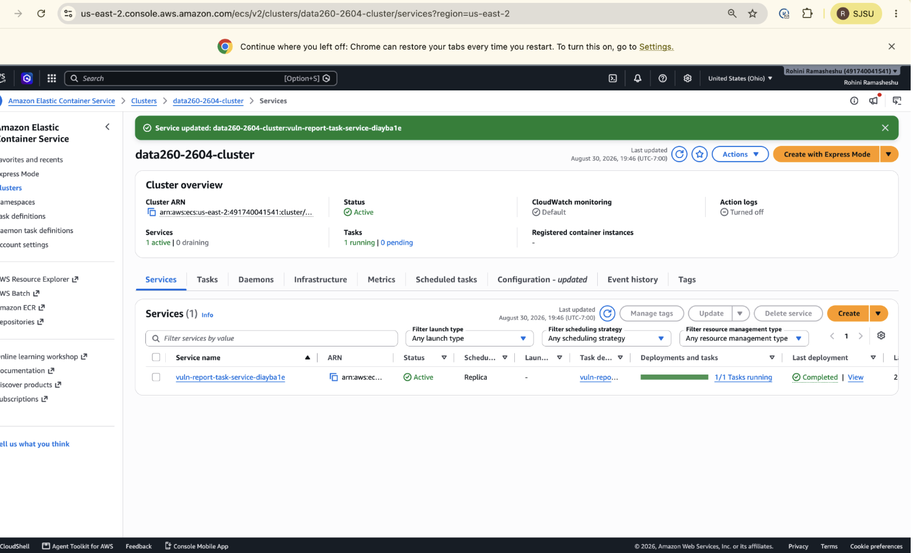

Name: Rohini Ramasheshu
Built a vulnerability report form with required fields (package name, affected version, email, description, severity dropdown, terms checkbox) and JavaScript validation using arrow functions, JSON conversion, destructuring, spread operator, and closures for submission tracking.

## Deployment — DockerBuilt and ran the app in a Docker container locally on port 8804.

## Deployment — AWS ECSDeployed the Docker image via AWS ECR + ECS Fargate, exposing it on a
public IP. Encountered and resolved a CPU architecture mismatch (image
built for arm64 on Apple Silicon, but Fargate required amd64) by
rebuilding with --platform linux/amd64.


Service and cluster were deleted immediately after confirming successful deployment to avoid ongoing AWS charges.Built a Planner → Reviewer → Finalizer pipeline using Ollama + langchain-ollama.
Explanation of each step: - Planner: given a title and content, drafts initial tags and a summary using a structured JSON-only prompt. - Reviewer: receives the Planner’s draft and checks/improves it, returning JSON in the same format. - Finalizer: parses the Reviewer’s JSON output, handling parse failures gracefully, and produces the final clean output.
See METRICS.md for full results table and
raw/nondeterminism_results.csv for all 40 runs.
Summary: At temperature 0.7, 20 runs produced 10 distinct tag sets — meaningful run-to-run variation. At temperature 0.0, all 20 runs produced identical results (1 distinct tag set), confirming near-deterministic behavior at low temperature.
Built a reusable model_client.py adapter with a
complete(messages, tools=None) interface, token counting
per turn, and a /stats method reporting cumulative totals
without altering history.
Ran a 5-turn conversation; /stats after turn 3 and turn
5 confirmed correct accumulation (turn 5: 5 turns, 194 total input
tokens, 1848 total output tokens, 10662 history characters).
Observation: Turn 5 (“summarize what we discussed”)
produced a generic answer with no reference to earlier topics, revealing
that our complete() method sends only the current message,
not accumulated history — directly illustrating why real conversational
memory requires explicitly resending context.
Theory answers: - Why is prior context resent every turn? LLMs are stateless between calls; without resending history, the model has no memory of prior turns, as demonstrated above. - System prompt vs. user message? A system prompt sets persistent behavior/instructions for the whole conversation; a user message is one turn of actual conversation content. - Why do input tokens grow over a conversation? If full history were resent each turn, each new turn’s input would include all prior turns, growing linearly with conversation length. - What eventually limits that growth? The model’s fixed context window — once history + new input exceeds it, older content must be truncated or summarized.
See AI_USE.md for full disclosure.